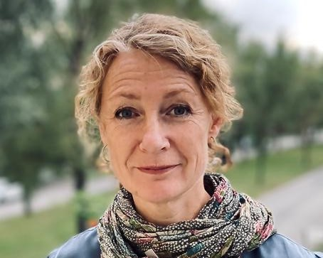

Poa Samuelberg
Poa Samuelberg är leg psykolog, leg psykoterapeut samt specialist i klinisk psykologi. Hon har lång erfarenhet från barn och ungdomspsykiatrin, senast från länsövergripande specialistmottagningen Traumaenheten, BUP Stockholm. Poa är certifierad utbildare och handleder i Traumafokuserad kognitiv beteendeterapi, TF-KBT. Sedan 2018 arbetar Poa på Barnafrid – nationellt kunskapscentrum om våld mot barn, LiU, som utredare för ett regeringsuppdrag om kompetenshöjning inom den psykiatriska traumavården i Första linjen och BUP – #Trauma på kartan. Poa är en av författarna till boken Traumatisering hos barn – en handbok (Natur & Kultur, 2018) och medförfattare till KBT inom barn- och ungdomspsykiatrin, red L-G Öst (Natur & Kultur, 2018).
